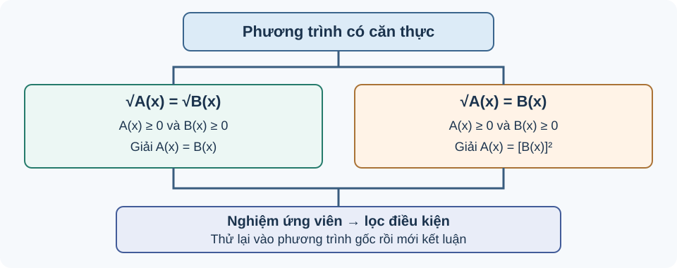

Bài 18. Phương trình quy về phương trình bậc hai
TOÁN 10 · CHƯƠNG VI · BÀI 18
Học cách giải phương trình chứa căn, xét điều kiện xác định và loại nghiệm không thỏa phương trình ban đầu.
Cùng tìm hiểu
Một phép biến đổi có thể giúp phương trình dễ giải hơn nhưng lại làm xuất hiện nghiệm không thỏa phương trình ban đầu. Điều này đặc biệt hay xảy ra khi bình phương hai vế của phương trình có căn thức.
Chẳng hạn, từ \(\sqrt{x+1}=x-1\), nếu chỉ bình phương rồi giải phương trình bậc hai, em có thể tìm được một giá trị khiến vế phải âm. Nhưng căn bậc hai theo quy ước luôn không âm, nên giá trị ấy không thể là nghiệm. Vì vậy, điều kiện xác định và dấu của vế không chứa căn cần được viết trước phép bình phương.
Trong bài này, em sẽ thấy quy trình ba bước: xác định điều kiện → biến đổi theo đúng giới hạn áp dụng → thử lại từng nghiệm vào phương trình ban đầu. Thử lại không phải công đoạn phụ, mà là cách bảo vệ tính đúng đắn của lời giải.
Ví dụ trực quan
Vì sao phải kiểm tra nghiệm?
Bình phương hai vế phương trình là phép biến đổi không luôn tương đương nếu không kiểm soát dấu. Ví dụ từ \(x=1\) suy ra \(x^2=1\), nhưng chiều ngược lại không đúng vì \(x=-1\) cũng thỏa \(x^2=1\).
Để giải phương trình chứa căn, phải đặt điều kiện, biến đổi và thử lại nghiệm trong phương trình ban đầu.
Hai căn bằng nhau phải có nghĩa trước khi bình phương
Phép bình phương giúp bỏ căn nhưng căn bậc hai trong số thực chỉ xác định khi biểu thức dưới căn không âm; không thể coi nghiệm đại số là nghiệm thật nếu căn vô nghĩa.
Để giải phương trình chứa căn, hãy nhớ rằng \(\sqrt u\) chỉ xác định khi u≥0 và luôn không âm; em sẽ cần cả kiến thức giải phương trình bậc nhất. Em có thể học các kiến thức tiền đề ngay trong bài.
Với \(\sqrt{A(x)}=\sqrt{B(x)}\), đầu tiên yêu cầu \(A(x)\ge0\) và \(B(x)\ge0\). Sau đó hai căn không âm bằng nhau khi và chỉ khi \(A(x)=B(x)\) trong miền; đây là phép đổi tương đương sau khi đặt điều kiện.
Vì sao chọn phương pháp này? Đặt điều kiện cho cả hai căn rồi mới giải phương trình; không được giữ nghiệm ngoài miền.
Vận dụng. Giải \(\sqrt{x+1}=\sqrt{2x-2}\) trong \(\mathbb R\).
Đối chiếu
Đáp án: Điều kiện \(x+1\ge0,\,2x-2\ge0\Rightarrow x\ge1\). Bình phương: \(x+1=2x-2\Rightarrow x=3\). Thử: hai vế đều bằng 2. Nghiệm duy nhất x=3.
Vì sao: x=3 hợp miền x≥1, biểu thức dưới căn đều bằng 4; không có nghiệm nào khác vì phương trình tuyến tính A=B chỉ cho x=3.
Đây là câu tự luyện công khai, không chấm điểm thành thạo. Nếu chưa đúng, mở hướng dẫn tự sửa phía dưới.
Một căn bằng biểu thức thường: vế phải phải không âm

Cách đọc hình. Đọc sơ đồ theo thứ tự điều kiện của căn/vế phải, phép bình phương, giải phương trình, rồi thử lại. Mũi tên quay về kiểm tra cho thấy nghiệm phương trình sau bình phương chưa chắc là nghiệm ban đầu.
Một căn thức thực không bao giờ âm. Do đó nếu nó bằng một biểu thức \(B(x)\), bản thân \(B(x)\) phải không âm, điều thường bị mất khi bình phương.
Biết \(\sqrt u\ge0\), giải phương trình bậc hai nhân tử và thử nghiệm. Em có thể học các kiến thức tiền đề ngay trong bài.
Với \(\sqrt{A(x)}=B(x)\), phải có \(B(x)\ge0\) (và \(A(x)\ge0\)); sau đó bình phương \(A(x)=B(x)^2\), giải và kiểm. Bình phương tự nó không bảo đảm mọi nghiệm ứng viên có dấu đúng.
Đối chiếu
Đáp án: Phải có \(x-1\ge0\Rightarrow x\ge1\). Bình phương: \(x+5=(x-1)^2\Leftrightarrow x^2-3x-4=0\Rightarrow x=4\) hoặc \(x=-1\). Chỉ x=4 hợp lệ, thử \(\sqrt9=3=4-1\).
Vì sao: x=-1 bị loại vì vế phải −2 âm. Nghiệm duy nhất x=4 dù phương trình bình phương có hai nghiệm.
Đây là câu tự luyện công khai, không chấm điểm thành thạo. Nếu chưa đúng, mở hướng dẫn tự sửa phía dưới.
Nghiệm ngoại lai xuất hiện từ phép không tương đương
Biến đổi đại số đôi khi cho một nghiệm thỏa phương trình mới nhưng không thỏa phương trình ban đầu. Vì thế, em cần thử lại từng nghiệm trong phương trình gốc, thay vì tin ngay vào kết quả sau bình phương.
Đặc biệt, \(\sqrt{u^2}=|u|\): sau khi bình phương, một nghiệm tìm được mới chỉ là ứng viên; phải xét điều kiện để xác định nghiệm hợp lệ. Em có thể học các kiến thức tiền đề ngay trong bài.
Nếu \(A=B^2\) thì chỉ có \(|B|=\sqrt A\), chưa chắc \(\sqrt A=B\). Lý do có nghiệm ngoại lai là phép bình phương làm mất thông tin dấu. Một nghiệm cuối phải thỏa miền và phương trình gốc.
Đối chiếu
Đáp án: Điều kiện \(x\ge0\). Bình phương \(2x+3=x^2\Leftrightarrow(x-3)(x+1)=0\), ứng viên x=3,−1. Thử: x=3 cho \(\sqrt9=3\), x=−1 làm vế phải âm (và \(\sqrt1=1\ne-1\)). Nghiệm duy nhất x=3; x=−1 ngoại lai.
Vì sao: Bình phương tạo x=−1 dù hai vế gốc trái dấu. Chỉ x=3 thỏa toàn bộ.
Đây là câu tự luyện công khai, không chấm điểm thành thạo. Nếu chưa đúng, mở hướng dẫn tự sửa phía dưới.
Độ dài hình học buộc nghiệm dương
Bài toán đo chiều dài thang dựa vào định lí Pitago có thể dẫn tới phương trình chứa căn. Nghiệm âm từ bình phương tuy đúng đại số nhưng không là độ dài thực tế.
Biết tam giác vuông, Pitago \(c^2=a^2+b^2\), độ dài phải dương và căn không âm. Em có thể học các kiến thức tiền đề ngay trong bài.
Khi một cạnh góc vuông là h>0 và cạnh kia 5 m, cạnh huyền là \(\sqrt{h^2+25}\), phải phù hợp chiều dài thang cho trước. Giải căn rồi lọc h>0 không chỉ vì toán căn mà vì ý nghĩa vật lý của ẩn.
Vì sao chọn phương pháp này? Chọn ẩn có đơn vị và miền h>0, lập \(\sqrt{h^2+25}=13\), giải và thử lại. Không chấp nhận h âm dù bình phương cho hai số đối nhau.
Vận dụng. Một thang dài 13 m dựa tường, chân thang cách tường 5 m. Đặt h>0 là độ cao đầu thang trên tường. Lập phương trình chứa căn và tính h.
Đối chiếu
Đáp án: \(\sqrt{h^2+5^2}=13\Rightarrow h^2=169-25=144\). Vì h>0 nên h=12 m; thử \(\sqrt{12^2+5^2}=13\).
Vì sao: Nghiệm h=−12 bị loại do không biểu diễn độ dài. Tam giác 5–12–13 kiểm chính xác và đơn vị là mét.
Đây là câu tự luyện công khai, không chấm điểm thành thạo. Nếu chưa đúng, mở hướng dẫn tự sửa phía dưới.
Thuật ngữ, kiến thức và kỹ năng
Thuật ngữ: Phương trình chứa căn, miền xác định, bình phương hai vế, biến đổi tương đương, nghiệm ngoại lai, thử lại nghiệm.
Sau bài học, em cần làm được: Ghi điều kiện trước khi bình phương; giải phương trình bậc hai thu được; kiểm từng nghiệm trong phương trình gốc và loại nghiệm ngoại lai có lý do.
2.1. Phương trình dạng \(\sqrt{A(x)}=\sqrt{B(x)}\)
Phương trình tương đương với hệ điều kiện
Quy trình: giải \(A(x)=B(x)\), giữ lại các nghiệm làm hai biểu thức dưới căn không âm, rồi kiểm tra trong phương trình ban đầu.
Ví dụ 1.
Bình phương được \(x^2-3x+4=x+2\), suy ra \(x^2-4x+2=0\). Hai nghiệm ứng viên \(x=2\pm\sqrt2\). Vì cả hai đều lớn hơn \(-2\), biểu thức \(x+2\ge0\); thay trở lại cho thấy hai vế căn bằng nhau. Vậy \(\boxed{x=2-\sqrt2\text{ hoặc }x=2+\sqrt2}\).
2.2. Phương trình dạng \(\sqrt{A(x)}=B(x)\)
Vì vế trái không âm, phương trình tương đương với
Khi hai điều kiện này thỏa, \(A(x)=B(x)^2\ge0\) cũng bảo đảm căn có nghĩa.
Quy trình 4 bước: (1) đặt điều kiện \(B(x)\ge0\) và miền xác định nếu cần; (2) bình phương đưa về phương trình bậc hai (hoặc bậc nhất); (3) giải tìm nghiệm ứng viên; (4) loại nghiệm không thỏa điều kiện và thử lại.
Ví dụ 2.
Điều kiện \(x\ge1\). Bình phương: \(2x+3=(x-1)^2\), hay \(x^2-4x-2=0\). Nghiệm ứng viên \(x=2\pm\sqrt6\). Vì \(2-\sqrt6<1\), loại nghiệm này; \(2+\sqrt6\ge1\) thỏa phương trình gốc. Vậy \(\boxed{x=2+\sqrt6}\).
Ví dụ — Vì sao phải kiểm nghiệm sau khi bình phương?
Đề bài. Giải \(\sqrt{x+1}=x-1\).
Vì sao chọn cách này? Căn thức không âm, nên trước hết cần \(x+1\ge0\) và \(x-1\ge0\); khi đó mới bình phương hai vế an toàn.
Lời giải. Điều kiện gộp \(x\ge1\). Bình phương: \(x+1=(x-1)^2=x^2-2x+1\), hay \(x^2-3x=0\), suy ra \(x=0\) hoặc \(x=3\). \(x=0\) không đạt điều kiện và không thỏa gốc. Với \(x=3\), \(\sqrt4=2=3-1\), nên nghiệm duy nhất là \(x=3\).
Tự kiểm: Nếu chỉ ghi hai nghiệm \(\{0,3\}\), em đã giải phương trình sau bình phương chứ chưa giải xong phương trình ban đầu.
Tự luyện thêm. Ba câu sau giúp em kiểm tra điều kiện và nghiệm ngoại lai; hãy tự làm trước khi mở lời giải.
- Giải \(\sqrt{x+2}=x\).
- Giải \(\sqrt{x+5}=\sqrt{2x+1}\).
- Cho \(\sqrt{x^2+2x+5}=x+1\). Phương trình có nghiệm thực hay không? Giải thích.
Xem lời giải ba câu tự luyện
- \(x\ge0\). Bình phương \(x+2=x^2\iff (x-2)(x+1)=0\); chỉ \(x=2\) đạt điều kiện.
- \(x+5=2x+1\iff x=4\). Thay vào hai căn cho cùng \(\sqrt9=3\), vậy \(x=4\).
- \(x+1\ge0\). Bình phương được \(x^2+2x+5=(x+1)^2=x^2+2x+1\), mâu thuẫn \(5=1\). Do đó vô nghiệm.
Ví dụ mở rộng — Hai căn thức và nghiệm ngoại lai
Đề bài. Giải phương trình
Lời giải. Bình phương hai vế và rút gọn:
Hai nghiệm ứng viên là \(x=-2\), \(x=-4\). Tuy nhiên, \(x=-4\) làm \(x+3=-1<0\), không thuộc miền xác định; còn \(x=-2\) cho cả hai vế bằng \(1\). Vì vậy \(\boxed{S=\{-2\}}\).
Điều cần nhớ. Không phải cứ bình phương rồi giải phương trình đại số là thu được các nghiệm của phương trình chứa căn.
Ví dụ mở rộng — Ứng dụng độ dài trong hình học
Đề bài. Một tam giác vuông có hai cạnh góc vuông dài \(x\) m và \(4\) m, với \(x>0\). Tìm \(x\) nếu cạnh huyền dài \(2x-1\) m.
Lời giải. Theo định lí Pythagore:
Điều kiện cần là \(2x-1\ge0\), tức \(x\ge\frac12\). Bình phương được
Hai nghiệm ứng viên là \(x=3\) và \(x=-\frac53\). Chỉ \(x=3\) đạt điều kiện. Thử lại: \(\sqrt{3^2+4^2}=5=2\cdot3-1\). Vậy cạnh góc vuông cần tìm dài \(\boxed{3\text{ m}}\).
Điều cần nhớ. Những bài hình học như thế này giúp em luyện cách đặt điều kiện cho căn thức và thử lại nghiệm ứng viên trong phương trình ban đầu.
Ví dụ mở rộng — Vận dụng: hai hành trình gặp nhau cùng thời điểm
Vì sao cần bài này? Khi hai người đi theo hai lộ trình khác nhau, khoảng cách chưa đủ để quyết định điểm gặp. Ta cần đổi từng khoảng cách thành thời gian = quãng đường / vận tốc. Đây cũng là lúc phương trình chứa căn xuất hiện tự nhiên: đường đi xiên là cạnh huyền của tam giác vuông.
Đề bài. Hai người xuất phát cùng lúc và cần gặp nhau tại điểm \(M\) trên đoạn đường thẳng \(BC\) dài \(8\) km. Người thứ nhất xuất phát tại \(A\), cách \(B\) một đoạn vuông góc \(AB=3\) km, đi thẳng từ \(A\) tới \(M\) với vận tốc \(5\) km/h. Người thứ hai xuất phát tại \(C\), đi dọc đoạn \(CM\) với vận tốc \(4\) km/h. Hỏi phải chọn \(M\) cách \(B\) bao nhiêu kilômét để hai người đến cùng lúc?
Lời giải.
Bước 1 — hình dung và đặt điều kiện. Đặt \(x=BM\) (km), \(0\le x\le8\), vì \(M\) nằm trên đoạn \(BC\). Tam giác \(ABM\) vuông tại \(B\), nên \(AM=\sqrt{x^2+3^2}=\sqrt{x^2+9}\), còn \(CM=8-x\).
| Lộ trình | Quãng đường | Vận tốc | Thời gian |
|---|---|---|---|
| \(A\to M\) | \(\sqrt{x^2+9}\) km | \(5\) km/h | \(\dfrac{\sqrt{x^2+9}}5\) giờ |
| \(C\to M\) | \(8-x\) km | \(4\) km/h | \(\dfrac{8-x}4\) giờ |
Bước 2 — giải thích phương trình. Vì cả hai cùng xuất phát và phải đến cùng lúc, ta cho hai thời gian bằng nhau:
Trong miền \(0\le x\le8\), hai vế đều không âm, nên có thể bình phương:
Bước 3 — xét từng ứng viên. Phương trình sau bình phương cho \(x=4\) hoặc \(x=\dfrac{364}{9}\). Giá trị \(\dfrac{364}{9}>8\) nằm ngoài đoạn \(BC\), khiến \(CM=8-x<0\), nên không phải điểm gặp hợp lệ.
Bước 4 — thử lại điều kiện gặp nhau. Với \(x=4\), đường xiên \(AM=\sqrt{4^2+3^2}=5\) km; người thứ nhất đi \(5/5=1\) giờ. Người thứ hai đi \(CM=8-4=4\) km, cũng hết \(4/4=1\) giờ. Vậy điểm gặp cách B đúng \(4\) km.
Tự kiểm khi gặp bài tương tự: Hãy kiểm lần lượt đoạn đường có tồn tại hay không, vế chứa căn có nghĩa hay không, thời gian có không âm hay không, rồi thay nghiệm vào hai thời gian ban đầu. Một nghiệm đúng sau bình phương chưa đủ để khẳng định hai người gặp nhau.
Các sai lầm cần tránh
- Nhận hết nghiệm sau khi bình phương: nghiệm ngoại lai có thể được sinh ra.
- Quên dấu của vế không chứa căn: trong \(\sqrt{A(x)}=B(x)\) phải có \(B(x)\ge0\).
- Quên điều kiện của biến và việc thử lại: nghiệm đại số có thể làm căn vô nghĩa.
- Rút gọn căn bậc hai sai: với \(u\in\mathbb R\), ta có \(\sqrt{u^2}=|u|\), không tự thay bằng \(u\) khi chưa biết dấu của \(u\). Quy tắc này đặc biệt quan trọng nếu biểu thức dưới căn chứa bình phương của một đa thức.
Chuyển đến Luyện tập và Vận dụng Chương VI để làm bài củng cố. Bạn có thể mở gợi ý và lời giải sau khi tự làm.
Gợi ý khắc phục khi chưa làm được — 5 bước
- Nhận diện lỗi: Chỉ đặt điều kiện một căn hoặc giải A=B rồi không kiểm miền.
- Tự chẩn đoán: Em có đang mắc đúng lỗi này trong lời giải bài vừa thử không? Hãy khoanh bước đầu tiên chuyển từ dữ kiện sang kết luận mà em chưa chứng minh được.
- Kiến thức gốc: Với \(\sqrt{A(x)}=\sqrt{B(x)}\), đầu tiên yêu cầu \(A(x)\ge0\) và \(B(x)\ge0\). Sau đó hai căn không âm bằng nhau khi và chỉ khi \(A(x)=B(x)\) trong miền; đây là phép đổi tương đương sau khi đặt điều kiện.
- Tự sửa: Khoanh cả A(x),B(x), lập hai dấu ≥0, giao miền rồi mới biến đổi và thử. Chỉ mở lại đáp án ở trên sau khi đã thử giải một lần không xem gợi ý.
- Luyện lại (không nhân bản câu): Em có thể luyện lại một câu Core/Luyện tập cùng kiến thức, rồi tự giải thích bằng lời của mình.
Gợi ý khắc phục khi chưa làm được — 5 bước
- Nhận diện lỗi: Giữ nghiệm x=−1 chỉ vì nghiệm phương trình sau bình phương.
- Tự chẩn đoán: Em có đang mắc đúng lỗi này trong lời giải bài vừa thử không? Hãy khoanh bước đầu tiên chuyển từ dữ kiện sang kết luận mà em chưa chứng minh được.
- Kiến thức gốc: Với \(\sqrt{A(x)}=B(x)\), phải có \(B(x)\ge0\) (và \(A(x)\ge0\)); sau đó bình phương \(A(x)=B(x)^2\), giải và kiểm. Bình phương tự nó không bảo đảm mọi nghiệm ứng viên có dấu đúng.
- Tự sửa: Kiểm vế phải x−1≥0 trước khi xét nghiệm; thử tất cả ứng viên vào hai vế phương trình gốc. Chỉ mở lại đáp án ở trên sau khi đã thử giải một lần không xem gợi ý.
- Luyện lại (không nhân bản câu): Em có thể luyện lại một câu Core/Luyện tập cùng kiến thức, rồi tự giải thích bằng lời của mình.
Gợi ý khắc phục khi chưa làm được — 5 bước
- Nhận diện lỗi: Cho cả hai nghiệm từ phương trình bình phương mà không thử lại.
- Tự chẩn đoán: Em có đang mắc đúng lỗi này trong lời giải bài vừa thử không? Hãy khoanh bước đầu tiên chuyển từ dữ kiện sang kết luận mà em chưa chứng minh được.
- Kiến thức gốc: Nếu \(A=B^2\) thì chỉ có \(|B|=\sqrt A\), chưa chắc \(\sqrt A=B\). Lý do có nghiệm ngoại lai là phép bình phương làm mất thông tin dấu. Một nghiệm cuối phải thỏa miền và phương trình gốc.
- Tự sửa: Tạo bảng hai cột ứng viên/kiểm gốc: từng x tính căn thật và vế phải có dấu đúng hay không. Chỉ mở lại đáp án ở trên sau khi đã thử giải một lần không xem gợi ý.
- Luyện lại (không nhân bản câu): Em có thể luyện lại một câu Core/Luyện tập cùng kiến thức, rồi tự giải thích bằng lời của mình.
Gợi ý khắc phục khi chưa làm được — 5 bước
- Nhận diện lỗi: Bỏ điều kiện h>0, nhầm cạnh huyền thành h hoặc nhận nghiệm −12 m.
- Tự chẩn đoán: Em có đang mắc đúng lỗi này trong lời giải bài vừa thử không? Hãy khoanh bước đầu tiên chuyển từ dữ kiện sang kết luận mà em chưa chứng minh được.
- Kiến thức gốc: Khi một cạnh góc vuông là h>0 và cạnh kia 5 m, cạnh huyền là \(\sqrt{h^2+25}\), phải phù hợp chiều dài thang cho trước. Giải căn rồi lọc h>0 không chỉ vì toán căn mà vì ý nghĩa vật lý của ẩn.
- Tự sửa: Vẽ hình và đánh dấu cạnh huyền 13 m và cạnh góc vuông 5 m, viết h>0, rồi thử lại định lí Pitago với nghiệm tìm được. Chỉ mở lại đáp án ở trên sau khi đã thử giải một lần không xem gợi ý.
- Luyện lại (không nhân bản câu): Em có thể luyện lại một câu Core/Luyện tập cùng kiến thức, rồi tự giải thích bằng lời của mình.
Học tiếp: Core và Luyện tập · Tự kiểm tra cuối chương.
Nguồn toán học: SGK Toán 10 Kết nối tri thức với cuộc sống và học liệu SLM hiện hành. Lời giảng được biên tập nhằm hỗ trợ tự học độc lập.